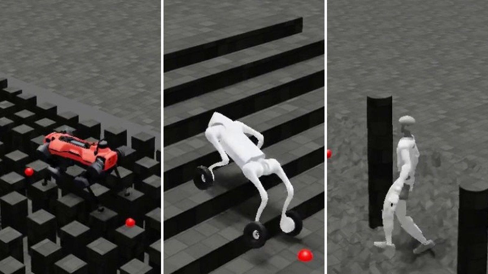
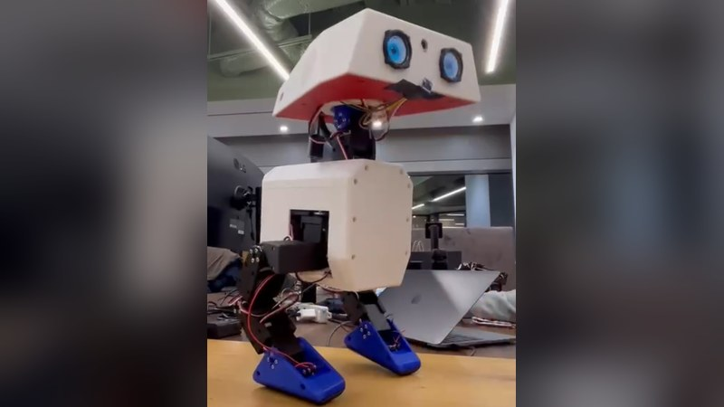
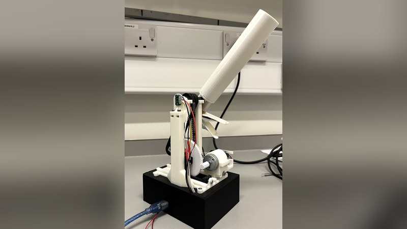
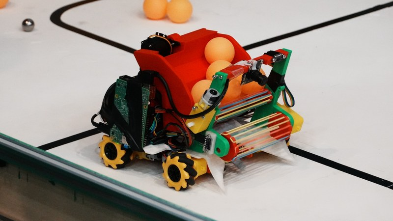

projects
robotics

Beyond Acrobotics
Extending generalist parkour to ANYmal D, Go2-W and G1, and to imperfect height maps.
Image to come
Humanoid loco-manipulation
Master's thesis on contact-based object interaction with the Unitree G1.
Image to come
Oxford STRIDE
Building the Berkeley Humanoid Lite for safe human-robot interaction, and supervising a RoboCup 3D simulation team.

Small bipedal robot
Electronics, calibration and interaction policies at Algomatic, including work on the Open Duck robot.

Haptic intubation trainer
A training device for tracheal intubation that simulates varied airway conditions.

Team OxBots
A vision-guided autonomous robot, placing 3rd of 36 at the Unibots UK National Finals.
Image to come
Multi-drone navigation
Bachelor's thesis comparing lead-follower and RL controllers for drones navigating through buildings.